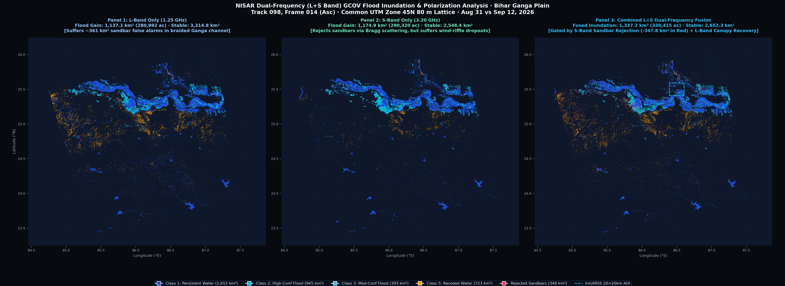
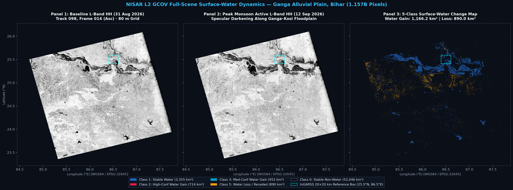
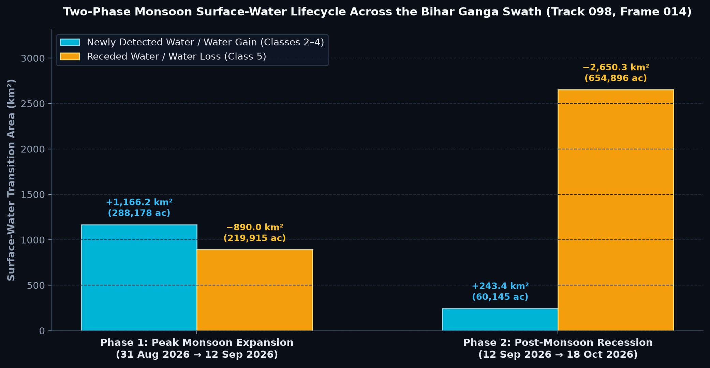

Mapping water change across a 1.157 billion pixel scene.
A full-scene, dual-frequency workflow for the Bihar Ganga alluvial plain using NISAR L2 GCOV—built to make the L-band versus S-band question measurable.

The challenge is not a 20 km box.
The box identifies the target region. The analysis products cover the selected NISAR scene footprint, including rotated-swath nodata and mixed floodplain surfaces.
Stream the scene. Preserve the physics.
Native GCOV → 80 m lattice
Row-bounded HDF5 hyperslabs are read directly, block-averaged on the fly, converted to dB, and passed to the change detector without materialising the native scene.
Δγ⁰dB reveals change
Active minus baseline backscatter: negative excursions indicate a move toward specular water; positive excursions can indicate recession or exposed rough sediment.
Two sensors. Two views of the same transition.
| Configuration | Stable water | New water gain | Receded water |
|---|---|---|---|
| L-only | 3,314.83 km² | 1,137.14 km² | 888.84 km² |
| S-only | 2,546.37 km² | 1,174.89 km² | 214.98 km² |
| L+S comparison | 2,652.29 km² | 1,337.15 km² | 723.37 km² |
Fusion is a hypothesis to test—not a magic label.
The comparison artifact aligns the bands on an 80 m overlap lattice and records the physical gates used to produce the fused map.

Separate perennial channel water from seasonal persistence.
Pre-monsoon
Dry reference and channel baseline.
Saturated baseline
Late-monsoon water already present.
Peak expansion
Newly detected water across the floodplain.
Recession
Drainage and exposed alluvial surfaces.

What we know—and what we still have to prove.
Independent reference path
Sentinel-2 L2A, 18 Oct 2026, 12.38% scene cloud cover. B03/B08 NDWI with SCL cloud/shadow masking over the official discovery box.
Metrics to report
Confusion matrix, precision, recall, F1, IoU, area error, and valid-pixel count—computed separately for L, S, and L+S.
Not yet a score
No accuracy number is shown until the independent reference raster is generated and the same support, nodata rule, and sampling design are used for every method.
Make full-scene radar analysis usable on ordinary hardware.
NISAR Pro combines an auditable Rust streaming engine, sensor-aware change detection, a dual-frequency comparison, and a judge-runnable notebook. The final contribution is not a bigger number—it is a workflow whose assumptions, limitations, and outputs can be inspected.